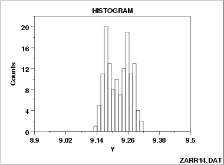

|
1.
Exploratory Data Analysis
1.3. EDA Techniques 1.3.3. Graphical Techniques: Alphabetic 1.3.3.14. Histogram
|
|||
| Histogram from Mixture of 2 Normal Distributions |  | ||
| Discussion of Unimodal and Bimodal |
The histogram shown above illustrates data from a bimodal (2 peak)
distribution.
In contrast to the previous example, this example illustrates bimodality due not to an underlying deterministic model, but bimodality due to a mixture of probability models. In this case, each of the modes appears to have a rough bell-shaped component. One could easily imagine the above histogram being generated by a process consisting of two normal distributions with the same standard deviation but with two different locations (one centered at approximately 9.17 and the other centered at approximately 9.26). If this is the case, then the research challenge is to determine physically why there are two similar but separate sub-processes. |
||
| Recommended Next Steps |
If the histogram indicates that the data might be appropriately fit
with a mixture of two normal distributions, the recommended next
step is:
Fit the normal mixture model using either least squares or maximum likelihood. The general normal mixing model is
Whether maximum likelihood or least squares is used, the quality of the fit is sensitive to good starting values. For the mixture of two normals, the histogram can be used to provide initial estimates for the location and scale parameters of the two normal distributions. Both Dataplot code and R code can be used to fit a mixture of two normals. |
||